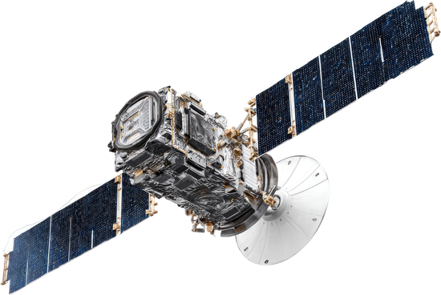
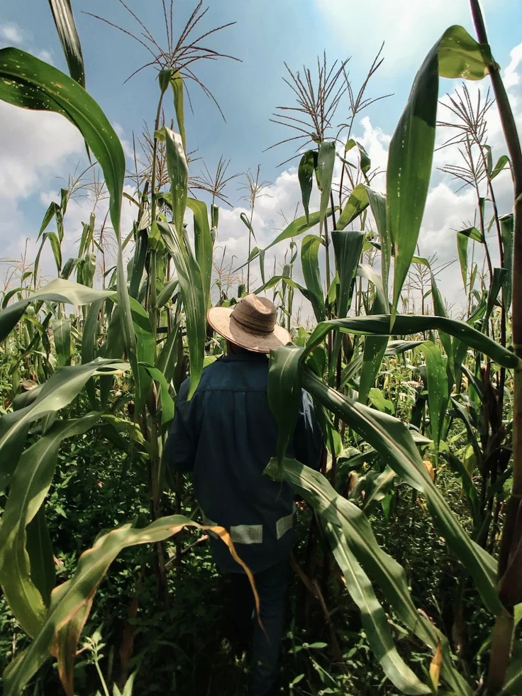
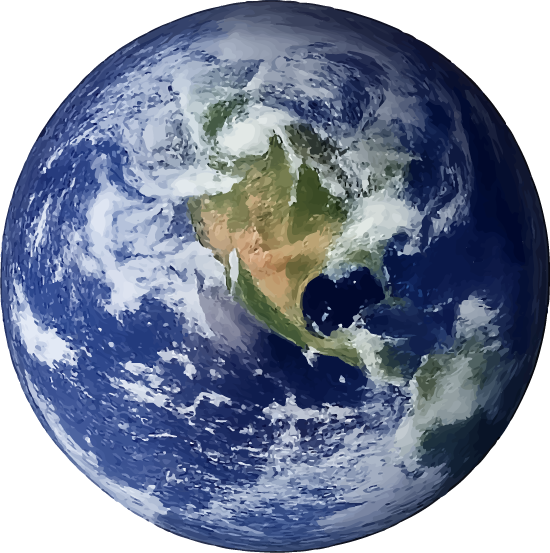
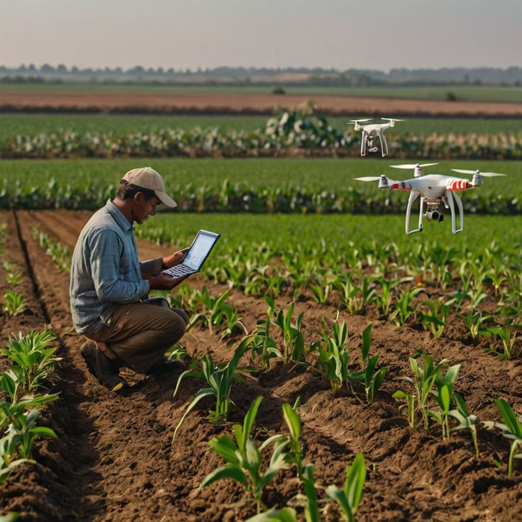

O Problema
Áreas rurais enfrentam baixa conectividade, desperdício e pouca previsibilidade agrícola.
Esses desafios reduzem produtividade, aumentam custos e dificultam decisões rápidas.

Tecnologia que Conecta e Monitora
Nossa solução utiliza avançados satélites LEO e sensores conectados.
Aplicamos inteligência artificial e APIs da NASA para monitoramento eficiente.
Nossa Missão no Agronegócio
Queremos levar conectividade de ponta para as plantações.
Nosso foco é otimizar irrigação, colheitas e reduzir pragas agrícolas.
Quem será
Impactado?

Impactamos diretamente produtores rurais, grandes fazendas e cooperativas agrícolas.
Beneficiamos também comunidades que tiverem internet estável.

Resultados que Geram Valor
Garantimos maior produtividade no campo, economia de água e decisões mais inteligentes.
Nossa solução integra perfeitamente tecnologia espacial, telecomunicações, agritech e inteligência artificial.

Inteligência Aplicada ao Campo
Agricultores recebem alertas em tempo real sobre estresse hídrico.
Satélites monitoram continuamente a saúde e umidade de toda plantação.